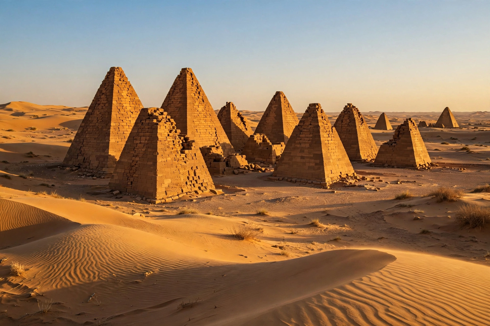

From Wikipedia, the free encyclopedia
| Nubia | |
 The pyramids of Meroë, burial place of Kushite kings and queens | |
| Location | Nile Valley of southern Egypt and northern Sudan |
| Major kingdoms | Kerma, Kush (Napata and Meroë), Nobatia, Makuria, Alodia |
| Key sites | Kerma, Napata (Gebel Barkal), Meroë, Abu Simbel, Dongola |
| Resources | Gold, ivory, ebony, incense, cattle |
| Languages | Meroitic; Old Nubian; Cushitic and Nilotic languages |
Nubia is a region along the Nile river encompassing the area between the first cataract of the Nile, just south of Aswan in southern Egypt, and the confluence of the Blue and White Niles in Khartoum, Sudan. It was the seat of several ancient kingdoms and one of the earliest cradles of civilisation, producing the kingdoms of Kerma and Kush. Ancient Egyptians called the land Ta-Seti, "land of the bow", after the skill of Nubian archers; its gold gave Egypt much of its wealth.
The region was inhabited from the Paleolithic era, and Neolithic communities farmed and herded along the Nile by the 5th millennium BC. The Kerma culture (c. 2500–1500 BC), centred at the city of Kerma in Upper Nubia, was the first Nubian kingdom: it built massive mud-brick temples (deffufa), traded gold, ivory and ebony with Egypt, and was wealthy enough that Egypt's New Kingdom pharaohs, beginning with Thutmose I, conquered and colonised Nubia around 1500 BC.
As Egyptian control weakened, an independent kingdom arose at Napata, near Gebel Barkal. The Kushite king Piye invaded Egypt around 744 BC, and his successors — including Shabaka and Taharqa — ruled Egypt as its Twenty-fifth Dynasty, the so-called "Black Pharaohs", until the Assyrians expelled them in the 660s BC. The Kushite kingdom survived in Nubia, transferring its capital south to Meroë around 590 BC. Meroitic Kush was a major iron-producing and trading power; its rulers built more pyramids — steep, small-chapelled tombs at sites such as Meroë, Nuri and el-Kurru — than were built in Egypt itself. The Meroitic script, in hieroglyphic and cursive forms, recorded the Meroitic language, which remains only partly understood. Kush declined in the 4th century AD, possibly under pressure from the rising kingdom of Aksum.
In the 6th century AD, Byzantine missions converted Nubia to Christianity, and three kingdoms emerged: Nobatia in the north, Makuria in the middle Nile, and Alodia in the south. Makuria, with its capital at Dongola, withstood Arab invasions under a treaty (the Baqt) that endured, with interruptions, for centuries, and produced notable church architecture and wall painting, as at Faras. From the 14th century the Christian kingdoms fragmented under pressure from Arab nomad migration and the Funj Sultanate; Islam gradually became dominant in the region.
Nubia was incorporated into Ottoman and then Anglo-Egyptian Sudan and into Egypt. In the 1960s, the construction of the Aswan High Dam flooded Lower Nubia — the homeland of Egyptian and Sudanese Nubians — forcing the resettlement of over 100,000 people. A UNESCO campaign salvaged major monuments, including the temples of Abu Simbel and Philae, moving them to higher ground. Nubian languages (such as Nobiin and Kenzi-Dongolawi) are still spoken, and Nubian cultural identity remains significant in both Egypt and Sudan.
Nubia was long studied mainly as a periphery of Egypt, but research since the mid-20th century — including excavations at Kerma, Qustul and the Meroitic cities — has established the originality and power of its civilisations. Sites such as the royal cemeteries of el-Kurru and Nuri and the city of Meroë are UNESCO World Heritage Sites.